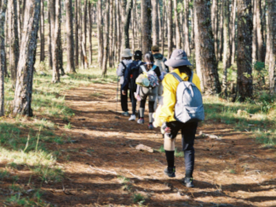
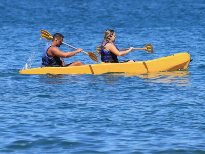
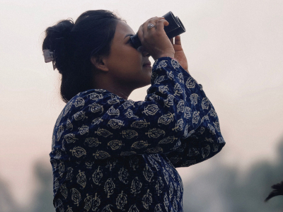

About Us
Pacific Trails Resort has been providing exceptional outdoor experiences for over 20 years. Our team is dedicated to preserving the natural beauty of the region while offering unique adventures for all skill levels. We started with a simple vision: to create a place where people could connect with nature and each other. Over the years, we have built a community of outdoor enthusiasts who share our passion for the natural world.
Our Team
Our team of experienced guides and staff are passionate about sharing the beauty of the Pacific Coast with our guests. Our team members bring a wealth of knowledge and experience to ensure every guest has a memorable and enriching experience. They are from all walks of life, united by their love for the outdoors and commitment to excellence.
Our Mission
Our mission is to provide exceptional outdoor experiences while preserving the natural beauty of the region. We are committed to sustainable practices and environmental stewardship, ensuring that future generations can enjoy the same breathtaking landscapes that we do today. We strive to create a welcoming and inclusive environment for all guests, fostering a sense of community and connection with nature.


